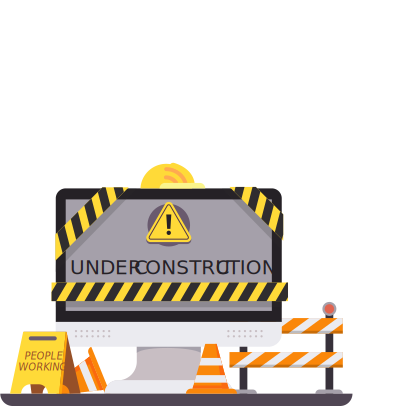

<!-- component -->
<!-- This is an example component -->
<div class='flex items-center justify-center min-h-screen from-gray-800 via-greeen-300 to-blue-500 bg-gradient-to-br'>
  <div class='w-full max-w-lg px-10 py-8 mx-auto bg-white rounded-lg shadow-xl'>
      <div class='max-w-md mx-auto space-y-6'>

              <div class="py-8 px-4 mx-auto max-w-screen-xl lg:py-16 lg:px-6">
                  <div class="mx-auto max-w-screen-sm text-center">
                      
                      <p class="mb-4 text-3xl tracking-tight font-bold text-black md:text-4xl">Website is under construction</p>
                      <p class="mb-4 text-lg font-light text-gray-500 dark:text-gray-400">It will be put into operation soon </p>
                  </div>
              </div>

      </div>
  </div>
</div>
